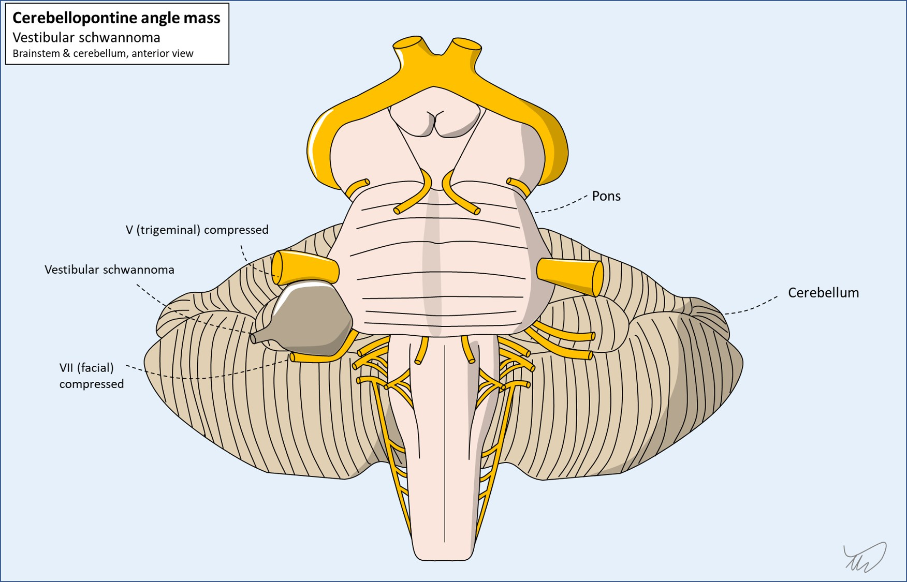

Case 21 - Facial numbness and hearing loss
What is the lesion?
The CPA is an important site for compression by lesions. Many types exist - various structures are situated in the CPA and abnormal tissue lineages can grow, forming a mass, distorting the adjacent nerves. The history here supports a compressive mass lesion, with symptoms building up over months.
The commonest CPA lesion is the vestibular schwannoma, a tumour growing directly from the myelin lining of nerve VIII, extending from its entry to the intracranial space in the IAM. It is also called an acoustic neuroma - but this term is inaccurate as the tumour grows from myelin (Scwhann) not neuron and is on the vestibular component rather than acoustic (cochlear). We will use vestibular schwannoma in this resource, though many use acoustic neuroma.

Meningiomas are another category of CPA mass. These grow from the dura rather than from the lining of the nerves.
Other tumours are much rarer but described - including schwannomas of V or VII.
Non-neoplastic mass lesions include cysts (usually epidermoid), lipomas, and aneurysms of the anterior inferior cerebellar artery (AICA).
While there is no bedside test to tell us exactly what type of lesion, two things should makes vestibular schwannoma the most likely.
Firstly, it is by far the most common CPA lesion - so probability alone favours it over the others.
Secondly, the features here fit – and there are some other features which are absent. These are features that, if present, might suggest an alternative. Facial nerve palsy and trigeminal motor dysfunction are not commonly seen with vestibular schwannomas, despite the proximity of V and VII.
Hemifacial spasm - discussed in an earlier case - is sometimes seen in CPA lesions due to irritation of VII at the root exit zone, but is unusual in vestibular schwannoma.
In anyone with a suspected CPA syndrome who also has facial weakness or hemifacial spasm, we should strongly consider other lesions than vestibular schwannoma.
This presentation - progressive orofacial numbness with sensorineural hearing loss - is classic for vestibular schwannoma, which is very likely here.
Formulation